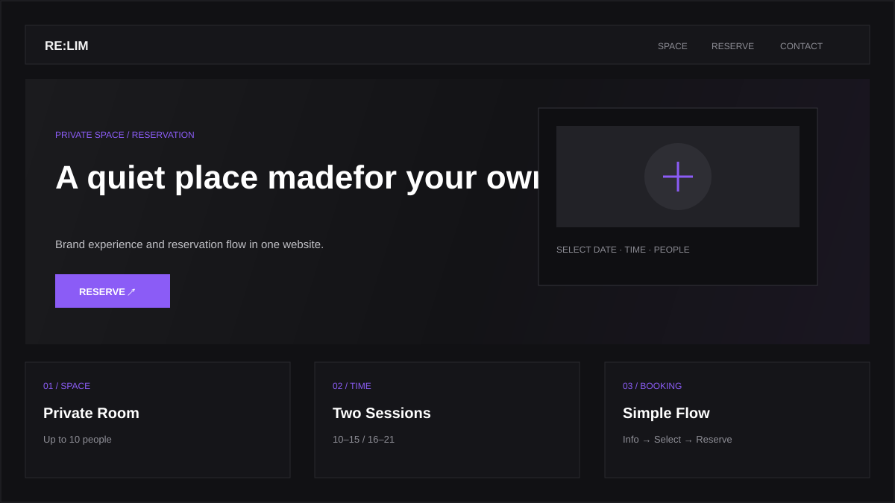
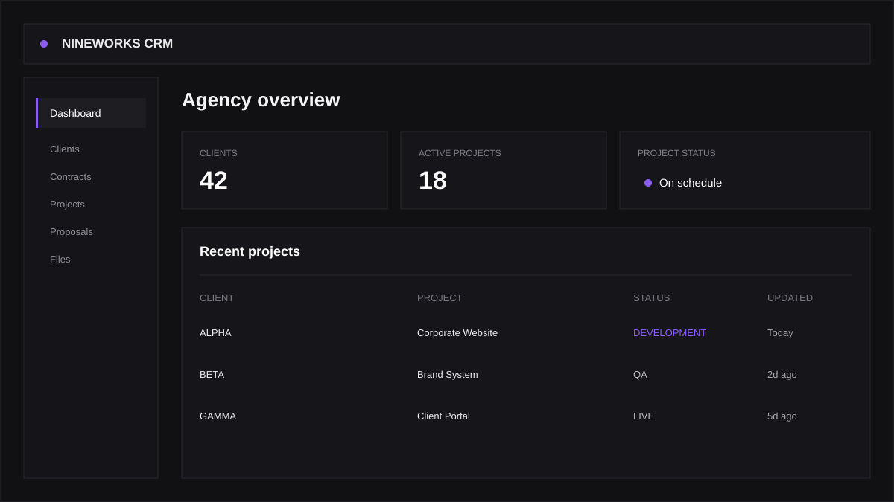

01 / COMPANY WEBSITE
Corporate Website Development
회사소개, 사업영역, 제품·서비스, 프로젝트, 문의까지. 기업이 고객에게 꼭 보여줘야 할 내용을 명확하게 정리해 반응형 웹사이트로 구축합니다.
SERVICES
무엇을 만들어야 할지 모두 정리해서 오실 필요는 없습니다. 회사의 목적과 현재 운영 방식을 먼저 확인하고 필요한 범위를 함께 정리합니다.
CORE SERVICES
고객에게 회사를 보여주는 웹사이트와 내부 업무를 움직이는 시스템입니다.

01 / COMPANY WEBSITE
회사소개, 사업영역, 제품·서비스, 프로젝트, 문의까지. 기업이 고객에게 꼭 보여줘야 할 내용을 명확하게 정리해 반응형 웹사이트로 구축합니다.

02 / BUSINESS SYSTEM
CRM, 관리자 페이지, 고객 포털, 계약·프로젝트·예약 관리처럼 조직의 실제 업무 방식에 맞는 기능을 설계하고 하나의 시스템으로 연결합니다.
WHEN YOU NEED US
회사 소개와 사업 내용을 정리해 필요한 페이지부터 잡습니다.
반복되는 업무를 정리해 관리자 시스템으로 연결합니다.
하나의 흐름으로 진행해 커뮤니케이션 단계를 줄입니다.
핵심 기능 중심으로 시작하고 이후 확장을 고려합니다.
EXTENDED SERVICES
회원·예약·구독·SaaS 등 핵심 기능 중심의 초기 제품을 구축합니다.
외부 API, AI, 데이터와 알림 흐름을 연결해 반복 업무를 줄입니다.
이미 기획된 프로젝트도 화면 구조와 사용 흐름부터 정리할 수 있습니다.
배포 이후 기능 개선, 유지보수와 서비스 확장을 이어갑니다.
PROCESS
기획부터 디자인, 개발, 배포까지 한 파트너 안에서 이어집니다.
회사와 프로젝트의 목적을 듣습니다.
필요한 페이지와 기능을 정리합니다.
화면과 기능을 구현하고 검수합니다.
오픈 후 관리와 확장을 지원합니다.
PROJECT REQUEST
기능이 아직 명확하지 않아도 현재 해결하고 싶은 문제를 기준으로 구축 범위를 함께 정리합니다.